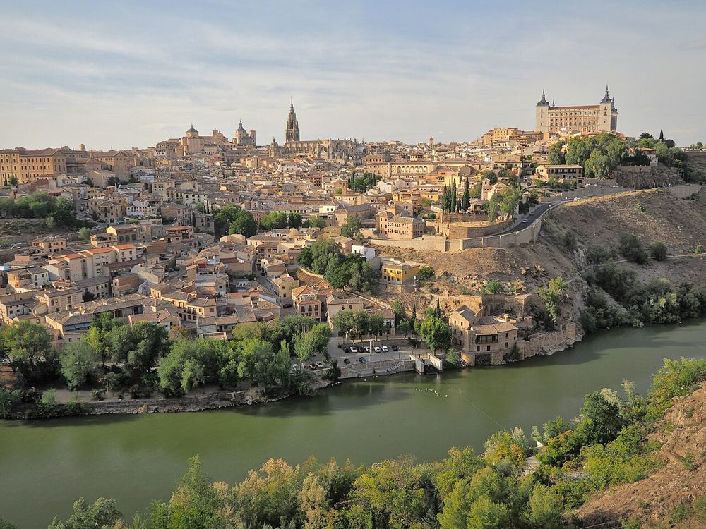

Tolède, la ville des chevaliers
Une ville médiévale perchée sur un rocher, avec épées, remparts et ruelles. Les ruelles sont raides et pavées : laissez la poussette pour un porte-bébé.


Ce que les enfants vont aimer
Une ville de chevaliers, d'épées et de remparts.
Y aller
Plaza de Zocodover, 45001 Toledo
Train AVANT depuis la gare d'Atocha, environ 35 minutes, puis bus ou escaliers mécaniques jusqu'à la vieille ville
Autour du lieu
Toilettes, tables à langer, aires de jeux, eau potable, pharmacie et station les plus proches, avec le temps de marche.
Aucun service recensé à proximité dans OpenStreetMap.
Questions fréquentes
Tolède, la ville des chevaliers : à partir de quel âge ?
Nous le conseillons de 5 à 14 ans. Une ville de chevaliers, d'épées et de remparts.
Tolède, la ville des chevaliers : combien de temps prévoir ?
Environ 6 h sur place, sans compter le trajet.
Tolède, la ville des chevaliers : peut-on y aller avec une poussette ?
Porte-bébé conseillé. Peu ou pas de pavés signalés autour.
Tolède, la ville des chevaliers : comment y aller ?
Plaza de Zocodover, 45001 Toledo. Train AVANT depuis la gare d'Atocha, environ 35 minutes, puis bus ou escaliers mécaniques jusqu'à la vieille ville.
Tolède, la ville des chevaliers : l'entrée est-elle gratuite ?
En partie : l'accès principal est libre, certaines zones ou activités sont payantes.
Fiche vérifiée le 30 octobre 2026. Horaires, tarifs et conditions d'accès changent souvent : vérifiez toujours sur le site officiel avant de partir. Tous les lieux de Madrid avec des enfants.